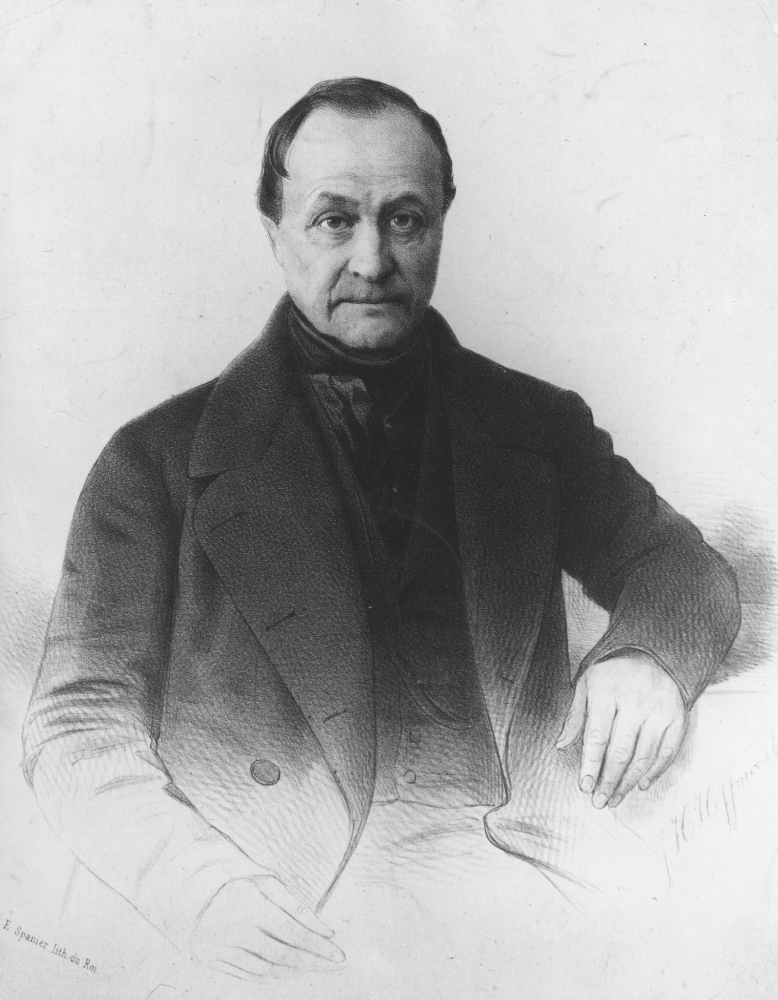
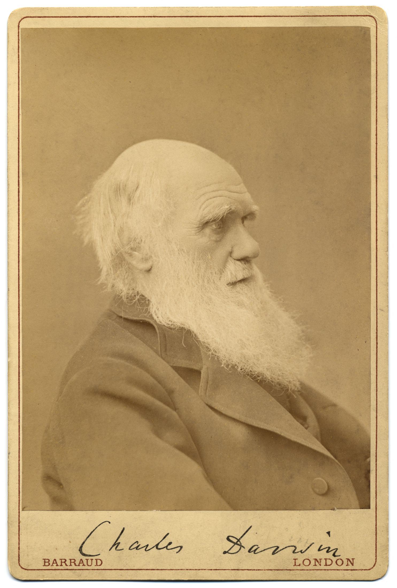
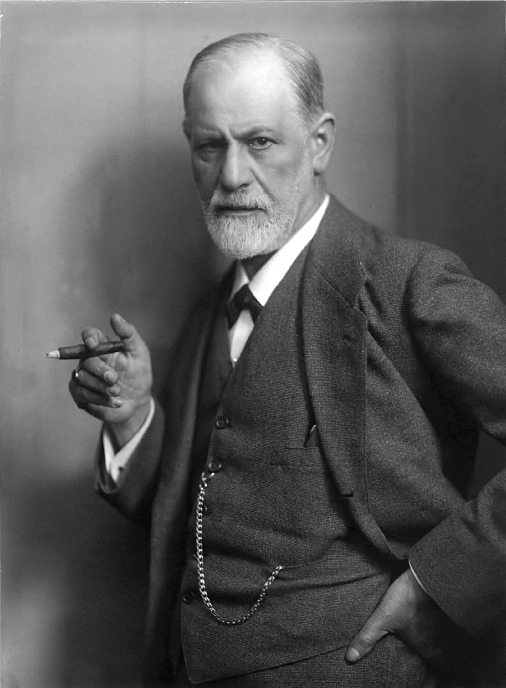

Tema 14 · El siglo XIX: el positivismo y los filósofos de la sospecha
§54 · Comte y el positivismo
La fe en la ciencia. El siglo XIX hereda el prestigio inmenso de la ciencia moderna: la física de Newton había mostrado que la naturaleza obedece a leyes que la razón humana puede descubrir (§33), y los éxitos no dejaban de acumularse. Auguste Comte (1798-1857) saca de ese éxito una conclusión radical: el único conocimiento válido es el científico, y ha llegado la hora de extender su método incluso al estudio de la sociedad. A esta postura la llamó positivismo, y con ella fundó además una disciplina nueva, la sociología.

La ley de los tres estados. El núcleo de su filosofía es una ley sobre la historia del saber. Comte sostiene que la humanidad —y también cada ciencia, y hasta la mente de cada individuo— atraviesa tres estados sucesivos en su manera de explicar el mundo. En el estado teológico, los fenómenos se explican por la voluntad de seres sobrenaturales: dioses que mueven las cosas a su antojo. En el estado metafísico, esos dioses se sustituyen por fuerzas y esencias abstractas —«la naturaleza», «el principio vital»—; es una fase intermedia y crítica, todavía especulativa. En el estado positivo, por fin, la razón renuncia a preguntar por las causas últimas y por el «porqué» de las cosas, que nunca podremos conocer, y se limita a descubrir, mediante la observación y la razón, las leyes que describen cómo se relacionan los fenómenos. El espíritu positivo no es optimista: es científico1. Su lema podría ser «saber para prever, prever para poder»: conocer las leyes para anticipar los hechos y, con ello, actuar sobre ellos.
El nacimiento de la sociología. Las ciencias no alcanzan el estado positivo a la vez, sino por orden de complejidad creciente: primero las más generales y simples —las matemáticas, la astronomía, la física—, luego la química y la biología, y en último lugar la más compleja de todas, la ciencia de la sociedad. Comte la llamó primero física social y después sociología, palabra que él mismo acuñó. Su proyecto era estudiar la sociedad con el mismo rigor con que la física estudia la materia, distinguiendo la estática social —lo que mantiene unido el orden social— de la dinámica social —las leyes del progreso y del cambio histórico—. No por azar resumió su programa en una fórmula que todavía hoy figura en alguna bandera: «orden y progreso». La sociología debía coronar el edificio de las ciencias y guiar la reorganización de una sociedad sacudida por las revoluciones.
Alcance y límites. El positivismo expresa así la gran confianza decimonónica en la ciencia como motor del progreso humano, y deja un legado duradero: la idea de estudiar la sociedad con método científico. Pero su tesis más fuerte —que solo el saber científico es válido, y que la teología y la metafísica son etapas superadas— es también su flanco débil. Reducir todo conocimiento legítimo a las ciencias empíricas, y descartar como vano cuanto no se deja medir, es una forma de cientificismo que la filosofía posterior discutiría a fondo2. La ciencia explica muchas cosas; la pregunta es si lo explica todo, y si lo que escapa a su medida carece por ello de sentido.
§55 · Los filósofos de la sospecha: Marx, Nietzsche y Freud
De la confianza a la sospecha. Toda la filosofía moderna había confiado en la conciencia. Descartes hizo del pienso la roca de la certeza (§36); Kant puso en la razón autónoma el fundamento del conocimiento y de la moral (§50, §51); la Ilustración creyó que la razón era transparente para sí misma (§47). El siglo XIX incuba la sospecha contraria: que la conciencia no es dueña en su propia casa, que lo que tomamos por pensamiento libre y racional es el efecto de superficie de fuerzas ocultas que no controlamos. Ya en el siglo XX, el filósofo Paul Ricoeur (1913-2005) bautizó esta corriente como la escuela de la sospecha y llamó a Marx, Nietzsche y Freud los tres maestros de la sospecha Tabla 12: cada uno enseña a desconfiar de la conciencia inmediata y a descifrar, detrás de ella, una causa escondida.
Darwin, el antecedente. Antes que los tres, una sacudida científica había preparado el terreno; la estudiaste en Filosofía 1. Charles Darwin (1809-1882) publicó en 1859 El origen de las especies, y con su teoría de la selección natural expulsó al ser humano del centro de la creación: ya no la obra aparte de un designio divino, sino un animal entre los animales, producto de un proceso ciego. El propio Freud describiría este golpe como una de las tres grandes humillaciones infligidas al orgullo humano: Copérnico desalojó a la Tierra del centro del cosmos (§33), Darwin desalojó al ser humano del centro de la vida, y el psicoanálisis desalojaría al yo consciente del centro de la mente. Darwin no es, en rigor, un filósofo de la sospecha, pero su descentramiento biológico es el telón de fondo que envalentona a los tres que vienen después.

Marx: la sospecha de la conciencia. Karl Marx (1818-1883) desenmascara la conciencia como ideología. Nuestras ideas, valores y creencias no serían creaciones libres del espíritu, sino el reflejo de las condiciones materiales y económicas y de los intereses de la clase dominante. «No es la conciencia la que determina el ser —escribe—, sino el ser social el que determina la conciencia.» La religión, sin ir más lejos, es para él un consuelo ilusorio que oculta la explotación real: el «opio del pueblo». Para entender de veras un pensamiento, hay que preguntar a qué intereses sirve. Su tratamiento detenido nos espera en el tema siguiente (§57–§58).
Nietzsche: la sospecha de la moral. Friedrich Nietzsche (1844-1900) dirige la sospecha contra los valores que tenemos por sagrados. Detrás de la moral no habría ni un mandato divino ni la razón pura, sino la vida, el instinto, la voluntad de poder y, a menudo, el resentimiento de los débiles. Su genealogía no pregunta si un valor es verdadero, sino de dónde viene y a quién beneficia. Y proclama que «Dios ha muerto»: el fundamento que sostenía la moral occidental se ha desvanecido, y aún no hemos medido sus consecuencias. Lo leeremos a fondo más adelante (§59–§61).
Freud: la sospecha del yo. Sigmund Freud (1856-1939) lleva la sospecha hasta la propia conciencia: el yo consciente es solo la punta visible de una psique gobernada por el inconsciente, por deseos reprimidos y pulsiones que deciden mucho más de lo que admitimos. Las razones que nos damos son, con frecuencia, racionalizaciones de motivos que ignoramos. A su pensamiento dedicamos la sección siguiente (§56).
El gesto común. Los tres difieren en lo que desenmascaran —la economía, la voluntad de poder, el inconsciente—, pero comparten un mismo gesto: sospechar de la conciencia inmediata y buscar tras ella una causa oculta que la explique. Con ellos, la confianza moderna en una razón transparente y soberana (§47, §51) entra en crisis: el sujeto deja de ser el fundamento seguro para convertirse en algo que hay que descifrar. Es el giro más hondo del siglo XIX, y todavía determina el modo en que pensamos sobre nosotros mismos.
| Maestro | La conciencia es… (lo que desenmascara) | Causa oculta que la gobierna | Método de sospecha | Se estudia en |
|---|---|---|---|---|
| Marx (1818-1883) | ideología: reflejo de los intereses de la clase dominante | las condiciones materiales y económicas («el ser social determina la conciencia») | analizar a qué intereses sirve una idea | §57-§58 |
| Nietzsche (1844-1900) | moral: valores tenidos por sagrados | la vida, el instinto, la voluntad de poder, el resentimiento | la genealogía: de dónde viene un valor y a quién beneficia | §59-§61 |
| Freud (1856-1939) | el yo consciente, dueño aparente de sí | el inconsciente: deseos reprimidos y pulsiones | el psicoanálisis: asociación libre e interpretación de los sueños | §56 |
§56 · Freud: introducción a su pensamiento
El psicoanálisis. Médico vienés y neurólogo, Freud fue el creador del psicoanálisis, que es a la vez una teoría de la mente y una terapia para el sufrimiento psíquico. Atendiendo a pacientes con neurosis para las que la medicina de su tiempo no hallaba causa orgánica, llegó a una imagen nueva y perturbadora del ser humano, que rompe con el viejo retrato del hombre como animal esencialmente racional.

El inconsciente. Su descubrimiento central es que la mayor parte de la vida psíquica es inconsciente. La conciencia es solo la punta del iceberg; bajo ella se extiende una masa sumergida de deseos, recuerdos y pulsiones que no percibimos, pero que determinan nuestros pensamientos, nuestros actos y nuestros síntomas. Nada en la vida psíquica ocurre por azar: hasta los actos fallidos —el lapsus, el olvido inexplicable— y los sueños tienen un sentido oculto. Es lo que se llama determinismo psíquico.
Las dos tópicas. Freud describió el aparato psíquico con dos modelos sucesivos. En la primera tópica distingue tres niveles: el consciente (lo que percibimos ahora mismo), el preconsciente (lo que no es consciente pero puede llegar a serlo, como un recuerdo que evocamos) y el inconsciente (lo que la represión mantiene activamente apartado de la conciencia y se resiste a volver). En la segunda tópica, más madura, describe tres instancias en conflicto: el ello, depósito inconsciente de las pulsiones, que se rige por el principio de placer y reclama satisfacción inmediata; el yo, que negocia con la realidad y se rige por el principio de realidad; y el superyó, que interioriza las normas de los padres y de la sociedad y actúa como conciencia moral que juzga y censura. El yo vive en una tensión permanente, apretado entre las exigencias del ello, las prohibiciones del superyó y los límites del mundo exterior.
Las pulsiones. Lo que mueve todo el aparato son las pulsiones, fuerzas situadas en la frontera entre lo corporal y lo psíquico. Freud las agrupó en dos: Eros, la pulsión de vida —la energía sexual o libido, que busca el placer, la unión y la conservación—, y, más tarde, Tánatos, la pulsión de muerte, que empuja hacia la agresión, la destrucción y el retorno a lo inerte. La vida humana es el juego y el conflicto de estas dos fuerzas. Y la sexualidad, entendida en sentido amplio y presente ya desde la infancia, es uno de los grandes motores del desarrollo psíquico, tesis que escandalizó a su época.
El método. ¿Cómo llegar al inconsciente, que por definición se esconde? Freud ideó para ello el método del psicoanálisis. Sus vías principales son la asociación libre —el paciente dice cuanto le viene a la mente, sin censurarse—, la interpretación de los sueños —la «vía regia al inconsciente»—, donde distingue el contenido manifiesto (lo que soñamos y recordamos) del contenido latente (el deseo reprimido que ese sueño disfraza), y la atención a los actos fallidos y a los síntomas, que delatan lo que la represión oculta. La curación consiste, en el fondo, en hacer consciente lo reprimido.
El estatuto del psicoanálisis. La influencia de Freud en el siglo XX —en la psicología, en el arte, en la manera misma de hablar de nosotros— es difícil de exagerar. Pero su pretensión de ser una ciencia ha sido muy discutida. Karl Popper (1902-1994) objetó que el psicoanálisis no es una ciencia, sino una pseudociencia, porque no es falsable: cualquier conducta, y también la contraria, puede explicarse siempre con sus conceptos, de modo que nada podría jamás refutarlo, y una teoría que lo explica todo no explica nada. Es un criterio —la falsabilidad— que estudiaremos con Popper más adelante (§70). Otros defienden el psicoanálisis no como ciencia experimental, sino como un arte de interpretar el sentido. El debate sigue abierto; lo que nadie discute es que, después de Freud, ya no podemos mirar la conciencia con la vieja inocencia.
«Positivo» no quiere decir aquí optimista ni buenista, sino científico: lo real y comprobable, frente a lo imaginario y lo especulativo.↩︎
No hay que confundir el positivismo de Comte con el positivismo lógico del Círculo de Viena, ya en el siglo XX, que llevará la misma desconfianza hacia la metafísica al terreno del lenguaje y de la lógica. El propio Comte, en su última etapa, derivó hacia una curiosa «religión de la humanidad» que muchos de sus seguidores no le perdonaron.↩︎